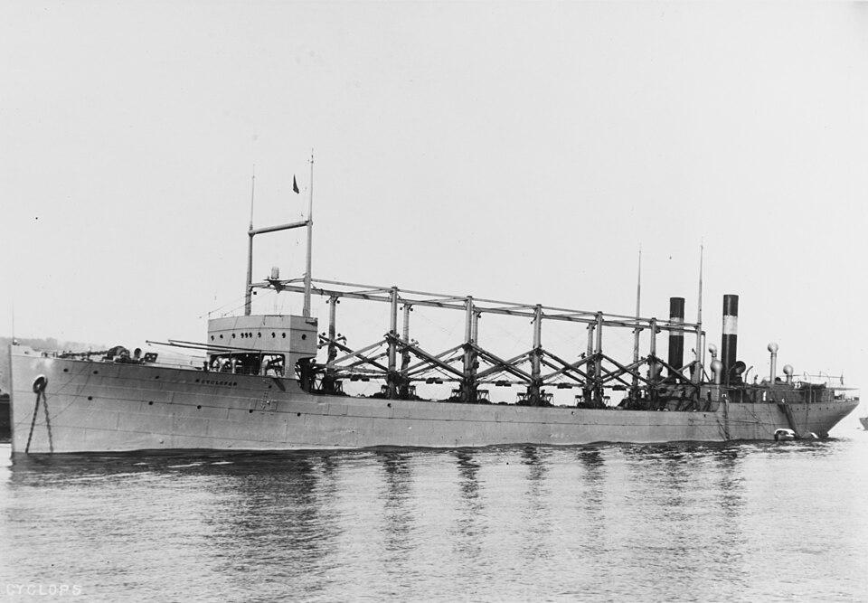

DOSSIER M02 // ATLANTIC // 1918
USS Cyclops: disappearance of a Navy collier
[ MARITIME & GEOGRAPHIC MYSTERIES // SHIP ]

_-_19-N-13451.jpg){kind=link}
Event and chronology
USS Cyclops left Barbados for Baltimore in March 1918 carrying manganese ore, with more than 300 people aboard. She failed to arrive and no confirmed wreckage was identified. The Navy searched and investigated, but wartime communications and the absence of survivors sharply limited reconstruction.
What later accounts allege
The loss has been attributed in popular accounts to German sabotage, a Bermuda-area anomaly, or a deliberately hidden Navy explanation. The story is sometimes presented as the first in a pattern of ships vanishing in a paranormal triangle.
Records, searches and conditions
Navy correspondence, shipping records and the vessel’s route establish the voyage and non-arrival; wartime files do not disclose a distress call. Reports raised concerns about the collier’s machinery, loading and structural condition, but no surviving evidence proves one failure mode or sabotage.
Independent and contrary evidence
Cyclops was a heavily loaded naval collier operating in wartime, and an at-sea structural or machinery failure could leave little trace. No enemy attack was documented, and the ship was lost years before the “Bermuda Triangle” label became popular. An unlocated wreck is not evidence of concealment.
What remains unknown
The final hours, weather experienced along the route, and the ship’s exact breakup remain unknown. With no authenticated wreck or last position, researchers cannot test competing engineering explanations against the hull or cargo state.
Assessment
The loss is real and unresolved, but there is no affirmative evidence of paranormal action or a cover-up. A geolocated wreck with diagnostic damage, a contemporaneous distress message, or newly authenticated operational records capable of distinguishing weather, loading, structural failure and attack would change the evaluation.
Sources and limits
- Naval History and Heritage Command — Cyclops I (AC-4), DANFSOfficial ship history documents the voyage and loss; it summarizes rather than reproduces the full 1918 inquiry.
- U.S. Navy Department — Annual Report, 1918Contemporary Navy report is primary administrative context; it contains no verified account of the final hours.
- U.S. Naval Institute — “Lost at Sea: USS Cyclops”Case-focused naval history discusses wartime shipping and proposed causes; it cannot identify an unrecovered wreck.